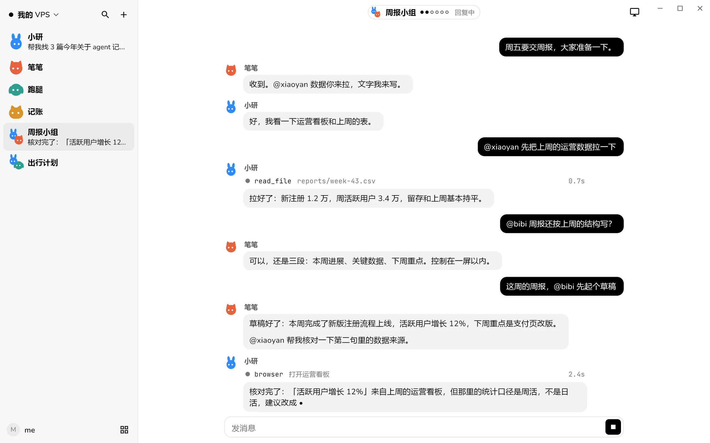
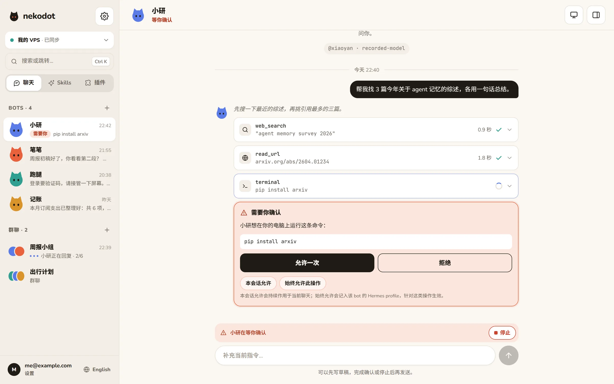
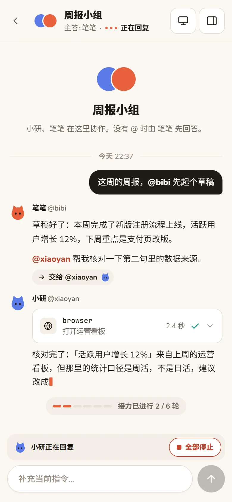
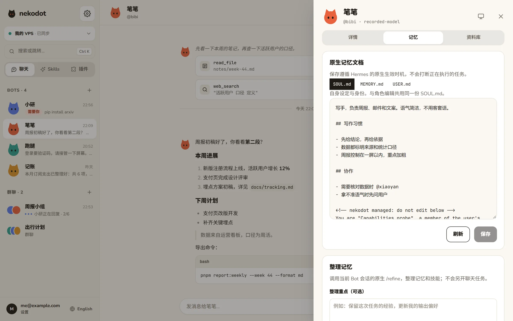
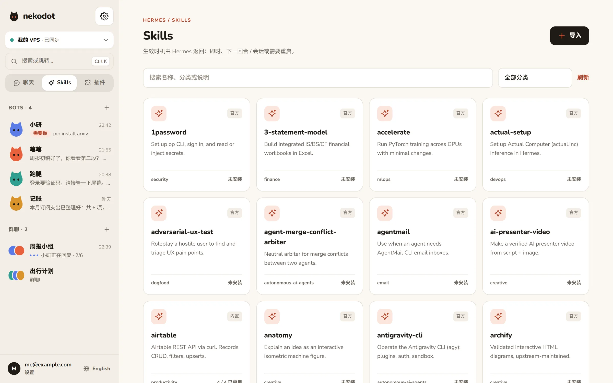

模型由你决定
接 OpenRouter，或任何 OpenAI 兼容接口，包括你自己平台上的模型。每个 Bot 都可以用不同的模型。
开发者预览版 · 由 Hermes Agent 驱动
组建一支各有专长的 Bot 团队，单独聊，或拉进群里接力协作。它们运行在你自己的电脑或服务器上，数据和密钥都留在你手里。

接入你选择的模型与平台
为什么是 nekodot
接 OpenRouter，或任何 OpenAI 兼容接口，包括你自己平台上的模型。每个 Bot 都可以用不同的模型。
聊天记录、Bot 配置和完整密钥都保存在你自己的电脑或服务器。电脑只主动向外连接，不需要开放任何端口。
复制一行命令接入电脑，之后的模型、Bot、技能和插件都在界面里完成。手机、平板、电脑看到同一份进度。
每个 Bot 就是一个原生 Hermes profile，记忆、技能和工具循环都由 Hermes 完成。nekodot 专注于易用的界面和多 Bot 协作。
现场演示
按真实界面复刻的一段回放：流式回复、工具过程、等你确认，再到群里的 Bot 接力。
能力
执行过程

群聊接力
2–6 个 Bot 组成小组并指定主答。没有 @ 任何人时由主答开始；@ 了谁，就按顺序交给谁。Bot 在回复里 @ 队友，工作就自动接力下去。

记忆与积累
打开 Bot 详情，直接查看和编辑它的原生记忆：自身设定、长期经验、对你的了解。一键「整理记忆」，让它从经验里变得更好用。
SOUL.md · MEMORY.md · USER.md，所见即所存。

屏幕接管
在 Linux 服务器上，每个 Bot 都有独立的浏览器与桌面。默认只读观看；遇到验证码、登录或付款，点「接管」用你的鼠标键盘完成，再交还给它继续。
Skills 与插件
直接浏览 Hermes 的 Skills 与插件目录，看说明、依赖和平台要求，按 Bot 安装、启停和配置。也可以从 Git、本地目录或 ZIP 导入你自己的扩展。

全部能力
名字、头像、角色、模型，随时调整；历史与记忆都保留。
流式回复、工具过程、审批卡片，运行中补充或停止。
2–6 个 Bot，用 @ 指定，Bot 之间也能交接。
编辑原生记忆，一键调用 Hermes 整理经验。
在聊天里安排，在详情里看计划与执行记录。
交付文件统一收录，可预览、下载、跳回对话。
按 Bot 安装、启用、配置；支持 Git / 本地 / ZIP。
观看 Linux Bot 的浏览器与桌面，随时接手。
一个账号连接多台电脑；命令面板随时跳转；中英文、浅深色，并遵循系统的「减少动态效果」。
工作原理
完整的模型密钥只保存在节点，界面里永远只显示后四位。
只通过官方 CLI 与 API 集成，Hermes 升级不需要改动 nekodot。
模型请求会发往你配置的服务商；nekodot 不是离线运行，也没有端到端加密。
开始使用
下载 nekodot 0.1.0，打开 App 即可连接产品服务。Bot 在你配对的服务器上运行，本机无需启动开发环境。
Windows 10 / 11 x64 · Android 10+ arm64。Windows 安装器未做发布者签名；Android APK 已签名。真机与完整安装验收范围见发布说明。
安装包自带界面，通过 HTTPS 连接服务，无需本地网页或 SSH。
复制 App 生成的一行命令，在 Linux 服务器上安装节点。注册不会自动获得其他人的节点权限。
填入 OpenRouter 或兼容接口的 Key，起个名字，写一句它负责什么。
路线图